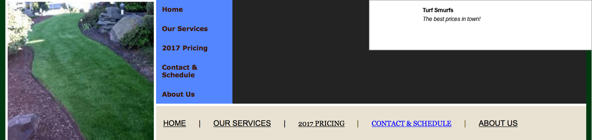
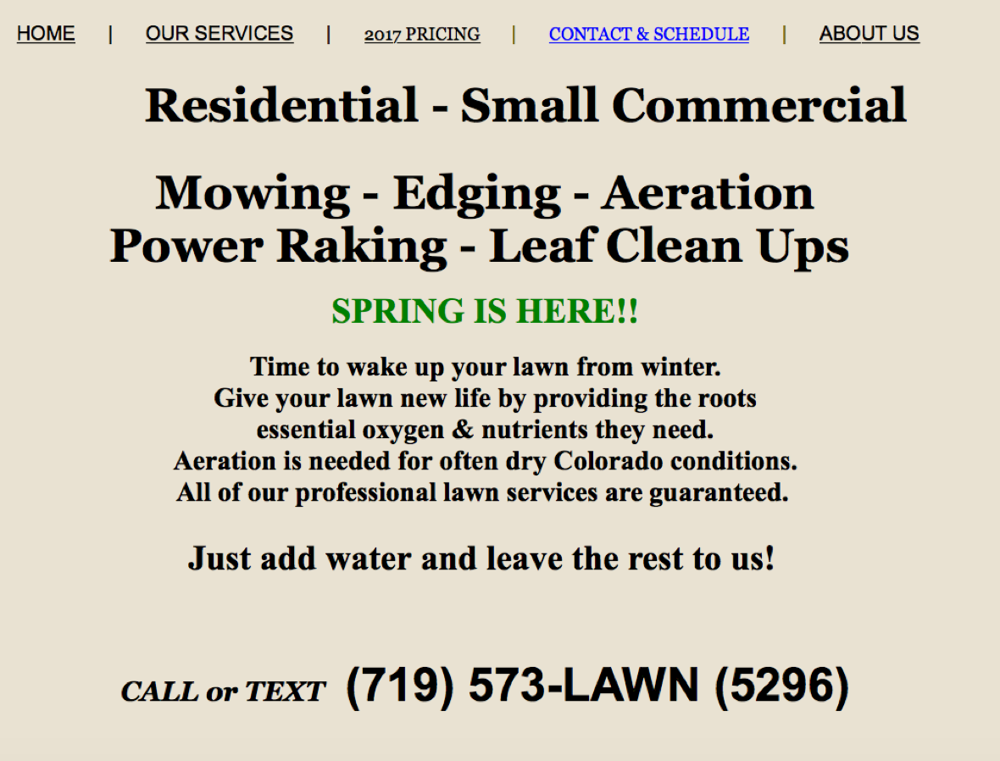

Turf Smurf is a growing company built around providing quality lawncare service to Central Illinois. The equipment used is of the highest caliber and the customer service is outstanding. EXPLORE TURF SMURFS
My problem was balancing user demands with Turf Smurf’s vision for a very simple and easily navigatable site. The solution must address the following three user stories in the most basic way possible:
As a user, I want to see all of Turf Smurf’s services.
As a user, I want to be able to contact Turf Smurfs so I can get an estimate.
As a user, I want to know I can trust this company and their service.
The branding of the site was already polished and in place, but the layout was what I need to refine. The previous site for Turf Smurfs was too complicated for users to navigate and was much too busy. It also lacked a modern edge.
Nav was super confusing for users.
Landing looked more like a classified ad.
I looked at other top Lawncare sites to get inspiration and see what was working from their layouts. I looked at Barr Landscaping and Lawn Service, Cuttin' it Close, and TruGreen, which are three of the highest rated lawncare companies in Peoria, Illinois. I wasn’t very excited with the results. All three sites seemed too busy for what my client was envisioning and I knew I could give a more modern edge to the site that these three companies surprisingly didn't seem to have. This exploration did help kickstart some ideas for how to proceed with the layout though.
I started sketching out some basic ideas. The landing is always the most pivotal page to design because if a user is not engaged and able to navigate immediately, they likely will not proceed further into the site. I know from previous research and experience that photos engage users so I knew I wanted to include a colorful, engaging photo. I also knew I needed to include several call to action opportunities for the user.
The landing page needed to capture user trust for them to consider booking Turf Smurf’s services. To build trust, I included Turf Smurf’s values in the beginning and also some testimonials from locals who have used their services.
I designed the navigation to be simple and my first call to action button easily navigates a user to the services page where they can not only view the services but also request a free estimate.
After presenting the layout to my client, they inquired about having information segregated on separate pages instead of a longer landing page. I explained to them the benefits of having the most important content all included on the landing page with the option for users to click into other pages for further information. This accomodates the natural laziness of users to minimize the clicks needed to get the information. The client agreed, and I delivered the following design.
You’ll notice the landing page has changed in layout to accomodate a more modern and edgy design. I also wanted to conserve more space and allow the users gaze to more easily navigate the information without having to bounce around excessively.
Originally, the services page did not include the gallery, meet the team, or estimate sections but through user testing I decided this would be necessary to lead the user further into the site. Plus, when users are browsing services they naturally want to reaffirm their initial trust by seeing the gallery of work or actual members of the team that would be servicing their lawn. In addition, it only makes sense to be able to scroll down and request an estimate right away on the same page.
The about section did not include photos and bios of the team originally, just the companies values. This new section however, is a huge add value for users wanting a more personal introduction to the team. This also builds trust.
I was able to solve all three user stories and balance the needs of the user with the vision of the company as well. I provided users a way to view services, and request an estimate. I also designed features for the site that would build trust, such as the testimonials, values, and photos of the employees with their bios. Last but not least, I kept the site very minimal and modern which fell right in line with the vision of the company. Users can now navigate the site with ease. For me, as a designer, this project was real win!